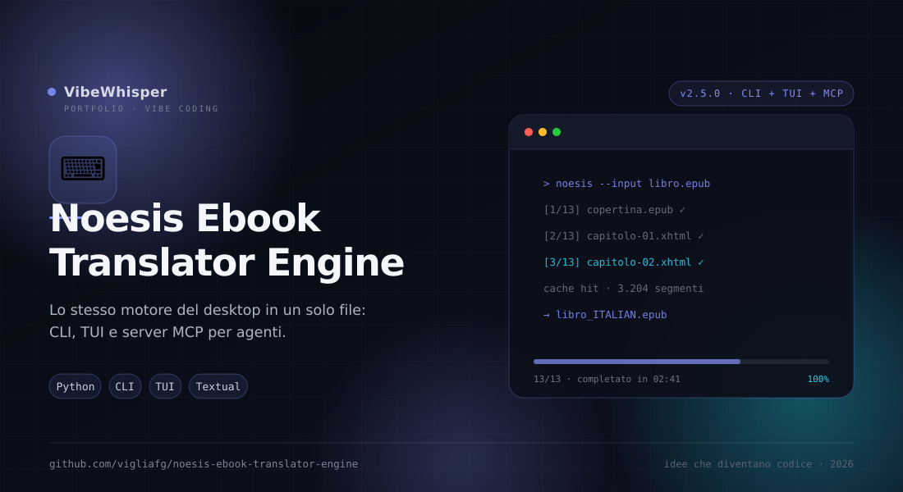

Noesis Ebook Translator Engine
Edizione da riga di comando dello stesso motore di Noesis Ebook Translator: un solo file Python, front-end CLI, TUI opzionale e — dalla 2.5.0 — server MCP per agenti. Nessuna dipendenza Qt.
📖 Cos'è
Noesis Ebook Translator Engine è la versione headless dell'app desktop. Un unico modulo generato (noesis_ebook_translator_engine.py) incorpora il motore verbatim del plugin Ebook Translator e vi aggiunge un front-end CLI; con -gui si apre una TUI Textual per chi preferisce un'interfaccia guidata senza GUI. Traduce un EPUB in un'altra lingua conservando formattazione, markup inline, blocchi di codice e indice, e produce un output identico a quello del desktop.
Dalla 2.5.0 è anche un tool agentico: espone le proprie capacità a un agente tramite server MCP su stdio e CLI JSON, senza dipendenze aggiuntive.
🤖 Novità 2.5.0 — capacità agentiche
Server MCP su stdio (--mcp): 16 tool tipizzati per scoprire il libro, pianificare token e costi, tradurre, esportare e riprendere; risorse per metadati, TOC e capitoli; prompt di workflow; job asincroni con progresso, annullamento e ripresa. Nessun SDK: solo libreria standard, anche nel binario PyInstaller.
CLI per agenti: --json (un documento su stdout), --json-stream (eventi NDJSON), --describe (manifest dei tool), --dry-run (piano e stima senza tradurre) e --resume. Capitoli selezionabili per indice, range, href o titolo, con errori espliciti: una selezione ambigua o inesistente non produce mai un EPUB vuoto.
Sicurezza: percorsi confinati alle --root, modalità --read-only, configurazione e cache isolabili, chiavi API da ambiente e testo dei libri marcato come non attendibile. Un solo job di traduzione alla volta.
# server MCP per un agente (stdio) noesis-ebook-translator-engine --mcp --root ~/Libri # equivalente macchina-leggibile della CLI noesis-ebook-translator-engine libro.epub --dry-run noesis-ebook-translator-engine libro.epub -t Italian --chapters 3 --json
Guida completa: docs/agenti-mcp-cli.md.
👤 A chi serve
È pensata per server, container, pipeline di automazione, agenti AI e utenti da terminale che vogliono tradurre EPUB senza installare Qt o aprire una finestra. Ottima per script notturni su una cartella di libri, per ambienti remoti via SSH, per un agente che traduce un capitolo su richiesta via MCP e per chi vuole integrare la traduzione in un flusso di pubblicazione o di archiviazione.
⚙️ Come funziona
Lo script tools/sync_from_desktop.py inlinea i moduli del motore del desktop (più appconfig.py e book.py) in un unico file e vi appende il front-end CLI/TUI e il livello agenti (tools/agent.py: AgentAPI, job runner, server MCP): il codice di traduzione è lo stesso, cambia solo l'interfaccia. La piccola superficie dell'API Calibre necessaria al motore è reimplementata nel file generato, quindi Calibre non serve. Il comando accetta motore, lingue, posizione della traduzione, cache, batching e chiavi API; la TUI si attiva con -gui e usa Textual, con fallback a un wizard a righe se Textual non è installato. Il server MCP parla JSON-RPC 2.0 su stdio con framing NDJSON e non richiede SDK esterni.
🎯 Perché Noesis Ebook Translator Engine
Perché lo stesso motore deve poter girare anche dove non c'è un desktop. L'edizione engine porta la qualità del progetto desktop in un comando ripetibile e scriptabile, senza duplicare la logica di traduzione.
✨ Caratteristiche Principali
- Un comando —
noesis-ebook-translator-engine libro.epubproducelibro_ITALIAN.epubaccanto all'originale - Stesso motore del desktop — Moduli inlineati verbatim: il risultato è identico a quello della GUI
- Motori multipli — Google gratuito, Google API, DeepL, Microsoft Edge, Youdao, Baidu e LLM (Gemini, ChatGPT, Claude, DeepSeek, OpenRouter)
- Testo bilingue — Posizione
only,belowoaboveper traduzione affiancata all'originale - Cache e batching — Cache su disco attiva per default, disattivabile con
--no-cache; batching online con--batch - TUI opzionale — Con
-guiparte il wizard Textual, utile su terminali interattivi - Elenco motori —
--list-enginesmostra motori, categorie e requisiti di chiave API - Server MCP —
--mcp: 16 tool, risorse, prompt, job con progresso, annullamento e ripresa; nessun SDK esterno - CLI per agenti —
--json,--json-stream,--describe,--dry-runcon stima di token e costo - Job e ripresa — Avvio asincrono, polling incrementale,
cancele--resumedalla cache - Automazione e agenti — Exit code e output prevedibili, ideale per script, job pianificati e agenti AI
🏗️ Come Funziona
- Installa il pacchetto oppure esegui direttamente lo script dal checkout
- Scegli il motore con
-e(defaultGoogle(Free)New) e imposta-se-t - Aggiungi
--api-keye--modelsolo se il motore scelto li richiede - Lancia la traduzione: il file di output viene scritto accanto all'input, o dove indica
-o - Per più libri, cicla il comando in uno script o in un job di sistema
- Per un agente: avvia
--mcp(stdio) o usa--json;--describeespone il manifest dei tool
📦 Installazione
# Requisiti: Python 3.10+ git clone https://github.com/vigliafg/noesis-ebook-translator-engine.git cd noesis-ebook-translator-engine python3 -m venv .venv . .venv/bin/activate pip install . # Traduzione (Google gratuito, italiano di default) noesis-ebook-translator-engine libro.epub # Con motore e lingue espliciti noesis-ebook-translator-engine libro.epub -e "MicrosoftEdge(Free)" -s English -t German # Interfaccia guidata TUI (richiede Textual) pip install ".[tui]" noesis-ebook-translator-engine -gui # Server MCP per agenti (stdio, nessuna dipendenza) noesis-ebook-translator-engine --mcp --root ~/Libri
💡 Casi d'Uso
- Batch notturno — Tradurre una cartella di EPUB con un ciclo shell e la cache condivisa
- Server e container — Girare senza Qt su una macchina remota o in CI
- Pubblicazione — Integrare la traduzione in una pipeline che produce l'edizione finale
- Terminali interattivi — Usare la TUI per scegliere motore e lingue senza ricordare le opzioni
- Agenti AI — Tradurre un capitolo su richiesta via MCP, con piano e stima del costo prima di eseguire